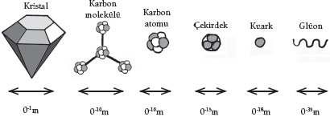
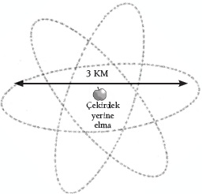

Atomlar, kuarklar ve parmaklarınızın arasından kayıp giden katılar
Dünya, tümüyle gazdan yapılmış olsaydı biz var olamazdık. Bedenlerimizin örgütlenme biçimi, bilginin DNA’nın yapısında saklanma biçimi, beyinlerimizin bilgiyi işleme ve tutma biçimi; bunların hepsi de atomların serbestçe etrafta dolaşmasını değil, yerli yerinde durmasını gerektirir. Hayat, en azından bildiğimiz biçimiyle hayat, katılık gerektirir. İyi de katı nedir?
Gaz bir madde, aralarında hiç bağ olmayan ya da çok zayıf bağlar bulunan atomların ya da moleküllerin bir toplamıdır. Sıvı maddede parçacıklar arasındaki bağlar zayıftır, parçacıkların birbirlerinin üzerinden kayıp geçmelerini mümkün kılar. Oysa katı bir maddede parçacıklar güçlü elektrostatik bağlarla bir arada tutulur. Fakat bu bir katıyı katı yapmak için yeterli değildir. Elinizi yüzünüzün önüne getirin. Yeterince katı görünüyor, öyle değil mi? Fakat nötrinolara, evreni dolduran atom altı parçacıklara göre bedeniniz katı olmaktan çok uzaktır. Her saniye içinizden, bedeninizin tek bir atomuyla bile etkileşim kurmaksızın trilyonlarca nötrino geçer. Bilimsel ilerleme, katı maddemizin büyük bölümünün boş olduğuna açıklık getirmiştir. Birbirlerinin içinden geçmek gibi hayali bir güce sahip olan katı maddeler bile geliştirdik. Deneysel bilim bize “katı” kavramının en iyi ihtimalle kaygan olduğunu öğretiyor.
ELMAS VE ONU OLUŞTURAN UNSURLAR

Katı atomik madde kütlelerinin bir başka örneği olan beynimiz bunu deneylerimizden bile daha derin bir düzeyde araştırma becerisine sahip olabilmiştir. Bu noktada herhangi bir kesinliğe ulaşılmış olmasa da geliştirdiğimiz en iyi anlayış bizi dikkat çekici bir sonuca getirmektedir: Katı madde diye bir şey yoktur. Her bir madde parçası esasen uzay ve zamanın enerjisindeki rastgele bir akışın sonucudur. Katılık kökeni itibarıyla bir yanılsamadır.
Bunu araştırmak için aşina olduğumuz katı bir maddeyle işe başlayalım. Güvenilir bir şeyle, güçlü bir şeyle. Elmas, sınamaya uygun bir katı gibi görünüyor. Doğal yollarla oluşması en zor maddedir; ayrıca en sert metallerin bazılarını kesmek için kullanılır. Elmas ne kadar katıdır? Elması özellikle sertleştiren şey molekül yapısıdır. Karbon atomları katı bir tetrahedral düzenlemeyle birbirine bağlanmıştır; birbirlerine 10-10 metre uzaklıktadırlar. Bu bağları oluşturanlar, atomun en dışındaki elektronlar olduğundan bunun kabaca atomun büyüklüğü olduğunu işitmek kulağa hiç de şaşırtıcı gelmeyecektir. Fakat bu elması gerçekten katı yapmaya yetmez. Atomik yapının tuhaf dünyasını incelememizin zamanı gelmiş bulunuyor.
Bu soruya eğilen ilk bilim insanının, Demokritos olduğu düşünülür genellikle. Demokritos aslında bilim insanı olmaktan ziyade Yunanlı bir filozoftu; fakat maddenin doğasıyla ilgili bilimsel bir tahminde bulunmuştu. Bir noktaya kadar bütün maddenin parçalanabileceğini, ama bundan sonra parçalanamayacağını ileri sürmüştü. En temel seviyede atomos kavramı vardı, atom sözcüğünü bu kavramdan çıkarmış bulunuyoruz. Demokritos’un bakış açısına göre, atomos herhangi bir biçimde bölünemeyecek, parçalanamayacak ya da değiştirilemeyecek parçacıklardı.
Sanayi devriminin ilk dönemlerine dek, durum gerçekten de böyleydi. Teleskop devri açılmıştı, gökleri incelemeyi öğrenmiştik; ama maddenin kökenine inme konusunda hiçbir ilerleme kaydedememiştik. İşte bu yüzden, maddeyi atomik ölçekte etkileyecek aletlere ihtiyaç duyduk.
Atomun İçi
Atomun incelenmesi konusunda atılımda bulunan İngiliz öğretmen John Dalton oldu. 18. yüzyılın sonlarına doğru Dalton, tek tek bütün elementlerin benzer atomlardan oluşan topluluklar olduğunu ileri sürdü. Bütün bu atomlar aynı özelliklere sahiplerdi. Dalton’a göre kimyasal reaksiyonlar iki farklı türde atomu birleştirip kimyasal bir molekül oluşturmalarını sağlıyordu. Dalton fikirlerini, bazı maddelerin, örneğin karbondioksitin içindeki elementlerin oranını belirleyen kimyasal deneylerle destekliyordu; karbondioksit bir parça karbondan, iki parça oksijenden oluşuyordu.
Atom kavramı sanayi devriminin süreçlerine de işledi, termodinamiğin öncülerinin gaz basınçlarını ve ısı aktarım oranlarını incelemelerini sağladı; bu incelemeler makinelerin yükselişinde itici güç oldu. Fakat bu dönemlerde, bir atomun içine girmenin mümkün olup olmayacağı konusunda henüz bir bilgimiz yoktu. Britanya İmparatorluğu zamanında, buharlı trenlerin ve ağır sanayileşmenin devrinde atom bilimi, Yunanlıların bölünemez bir özün varlığını öngören fikirlerinden pek de uzaklaşmış değildi.
<>
“Sanki bir parça peçeteye 30 santim çapında bir top
atmışsınız da geri dönüp size çarpmış gibi.”
ERNEST RUTHERFORD
<>
Fakat hemen hemen eş zamanlı gelişmeler bu durumu değiştirdi. İngiliz fizikçi Joseph J. Thompson’ın araştırmaları onun “yuvar” dediği parçacıkların varlığını ortaya çıkardı; yuvarlar negatif yüklüydüler ve en hafif atomlardan 2000 kere daha hafiftiler. Bu keşifle birlikte nihayetinde atomdan daha küçük bir şey bulmuştuk; artık buna elektron diyoruz.
1904’e gelindiğinde Thompson atomların birbirine karışmış artı ve eksi yüklü parçacıklardan oluştuğunu, bunun da “erik pudingine” benzer bir yapı oluşturduğunu ileri sürüyordu. O sıralarda Paris’te Pierre ve Marie Curie ile Henri Becquerel radyoaktiviteyi keşfettiler. Onların birbirini izleyen araştırmaları, radyoaktivitenin en azından bir bölümünün atomlardaki yüklü parçacıkların salınmasından kaynaklandığını gösteriyordu. Bu arada Yeni Zelandalı Ernst Rutherford İngiltere’ye gelmiş bulunuyordu. Rutherford, sadece 20-30 yılı alacak araştırmalarla atomun derinliklerine doğru binlerce yıldır olmadığı kadar fazla ilerleyecek; çok büyük yollar kat edecekti.
Herhalde Rutherford’un en büyük keşiflerden biri, Thompson’ın “erik pudingi” atom modelinin tümüyle yanlış olduğuydu. Rutherford incecik bir altın yaprağına artı yüklü alfa radyasyon parçacıkları –elektronları alınmış helyum atomları– ateşlemişti. Alfa parçacıkların hemen hepsi yapraktan geçmişti. Fakat bazıları ciddi biçimde hasar almıştı. Hatta birkaçı ateşleyiciye geri çarpmıştı. Bu durum Rutherford’u şoke etmişti. “Sanki bir parça peçeteye 30 santim çapında bir top atmışsınız da geri dönüp size çarpmış gibi,”diye yazmıştı deney sonrasında.
Nükleer Bomba
Rutherford’a göre bu olağandışı sonucun bir tek açıklaması vardı. Öyle anlaşılıyordu ki artı yüklü helyum atomlarının pek azı, doğrudan, bir artı yük yoğunlaşmasına doğru ateşlenmişti ve güçlü bir biçimde geri tepmişlerdi. Atomun hacminin büyük bölümü boş uzaydı. Fakat bütün pozitif yük ve neredeyse kütlenin tamamı merkezde bulunuyordu. Rutherford atom çekirdeğini keşfetmişti.
Bir atomun boş olmasını kavramak güçtür; atomun boş olması katılık yanılsamasına dair bize ilk ipucunu verir. Rutherford atomun içindeki çekirdeğin “Albert Hall’daki bir sineğe benzediğini” söylüyordu. Rutherford’un çevresindeki diğer isimler atom çekirdeğine “katedraldeki sinek” diyordu. Neresinden bakarsanız bakın devasa bir boşluktu bu. Atom çekirdeğini küçük bir elma büyüklüğünde alırsak atomun, eksi yüklü elektronların dış yörüngeleriyle tanımlanan kenar çapı 3 kilometre olur. Bu arada her elektron da bu cümlenin sonundaki noktadan daha küçük olur. Boşluğa başka bir biçimde de bakabiliriz. Atomlardaki boş uzayı çıkarırsanız, hidrojen çekirdeklerini aralarında hiç boşluk kalmayacak şekilde bir peninin hacmine sığdırırsanız peni büyüklüğünde, 30 milyon tondan daha ağır bir nesne elde etmiş olursunuz.
ELEKTRON KUTSAL MIDIR?
Fizik tarihi maddenin temel parçacıklarını bulma yönündeki umutlarımızın aldığı bir dizi darbeyle uğraşmıştır. Bir atomun bölünebileceğinin keşfedilmesi, bunun ardından çekirdeğin ve onu oluşturan parçacıkların keşfedilmesi bizi katılık muammasının daha da derinlerine götürmüştü. Temel olduğu düşünülen bir şey atomun negatif elektrik yükü, elektrondu. Fakat burada bile artık şüpheler vardır.
1998’de üç fizikçi, elektronun üç parçaya ayrılmış gibi davranabileceğini gösterdikleri için Nobel Fizik Ödülü’nü aldılar. Elektronun gerçekten bölünüp bölünmediği henüz açıklık kazanmış değildir, fakat elektron başlı başına bir gizemdir zaten. Örneğin elektronun kütlesinin nereden geldiğine dair hiçbir fikrimiz yok. Protonların ve nötronların bölünebileceğini, kütlelerinin nihayetinde kuantum dalgalanmalarından geldiğini bulduğumuz için iş elektronun katılığına geldiğinde bütün iddialar havaya uçmaktadır.
Çekirdeğin İçi
Hidrojen en hafif element olarak, olabilecek en basit çekirdeğe sahiptir; çekirdeğinde tek bir artı yük, yani proton vardır. Fakat genel olarak çekirdekte protondan fazlası vardır. Örneğin incelemekte olduğumuz karbon atomlarının çekirdekleri çok daha karmaşıktır; nötron denilen yüksüz parçacıklardan yarım düzine kadar içerirler. Hidrojen dışında bütün atomlarda nötron vardır. Protondan birazcık daha ağır olan nötron 1930’ların başında Liverpool Üniversitesi’nde James Chadwick tarafından keşfedilmiştir. Karbonun altı protondan ve ilgilenmekte olduğunuz “izotopa” bağlı olarak yedi veya sekiz nötrondan oluşan bir çekirdeği vardır.
<>
Rutherford atomun içindeki çekirdeğin
“Albert Hall’daki bir sineğe benzediğini” söylüyordu.
<>
Peki, burada bir katılık var mıdır? Rutherford protonun çapının yaklaşık 10-15 metre olduğunu bulmuştur. Nötron da hemen hemen aynı büyüklüktedir. Atom çekirdekleri atomun boşluğunu yansıtmaz. Karbon çekirdeği, içindeki bütün parçacıkların sımsıkı bir araya getirilmesi halinde olacağından daha büyük değildir. Daha büyük çekirdekler, çekirdeğin içindeki sıkı toplanmayı daha açık bir hale getirir. 238 parçacık içeren uranyum çekirdeğinin çapı sadece 14 proton genişliğindedir; daha ziyade 238 pinpon topuyla doldurulmuş bir basketbol topuna benzemektedir.
Bu keşifle birlikte fizikçiler, maddenin özündeki katılığa dair bir kavrayışa ulaşmışlardır. Fakat bir süreliğine: İşler kısa süre sonra yeniden kaygan bir hal almış, aşağıya doğru inen bir döngüye kapılmamıza neden olmuştur; öyle ki bu döngü bize bugün evrende hiçbir şeyin katı olmadığını söylemektedir. Sorun şudur ki artı elektrik yüküyle dolu olan çekirdeğin bir bütün halinde durmaması gerekir. Bir karbon çekirdeğindeki protonların birbirini itmesi gerekir.

ATOMUN BOŞLUĞU
Bu da başka bir kuvvetin iş başında olduğu anlamına gelir. Fizikçiler buna “güçlü” nükleer kuvvet demektedirler; çünkü bu kuvvetin itici elektromanyetik kuvvetin üstesinden gelebilecek kadar güçlü olması gerekmektedir. Güçlü kuvvetle ilgili araştırmalar yürütmek, fizikçilerin proton ve nötronun ya da toplu halde tanındıkları biçimiyle nükleonun özelliklerine dalmalarını gerektirmiştir. Nükleonların temel, bölünmez parçacıklar olmadıklarını; üç “kuark”tan oluştuklarını keşfetmişlerdir.
Kalpteki Kuarklar
“Kuark” ismi 1964’te fizikçi Murray Gell-Mann tarafından seçilmiştir; Gell-Mann James Joyce’un Finnegan’s Wake adlı romanında “Muster Mark için üç kuark” satırlarını okuduktan sonra “kuark” sözcüğünü seçmiştir. Kuarkın ömrü varsayımsal bir parçacık olarak başlamıştır; Gell-Mann’dan ayrı olarak Rus-Amerikalı fizikçi George Zweig da bu parçacığın varlığını öne sürenlerden biri olmuştur (o bu parçacığa “as” demek istemiştir). Her ikisinin de iyi bir tahminde bulunduğu anlaşılmışsa da bunun kanıtlanması biraz zaman almıştır.
Fizikçiler bu ölçekteki maddeyi ancak atomaltı parçacıkları hızlandırıcılarda ezerek görebilirler. Çarpışmalar daha küçük parçacıklar da yaratır; bu parçacıkların yüzen varlıklarının, çarpışma yerindeki hızlandırıcının duvarlarına yerleştirilmiş detektörlerde bıraktıkları izlerden çıkarsanması gerekir. İlk kuarklar 1968’de Stanford Lineer Hızlandırıcı Merkezi’nde yapılan çarpışmalarda belirlenmiştir. Varsayılan bütün kuark parçacıklarının görülebilmesi içinse bir yirmi yılın daha geçmesi gerekmiştir. Fakat artık kuarkların ekzotik isimler taşıyan altı “çeşidi” olduğunu biliyoruz: tuhaf, çekici, üst, alt ve daha yaygın olan yukarı ile aşağı.
Protonlar iki yukarı, bir de aşağı kuarktan oluşur; nötronlar iki aşağı kuark bir de yukarı kuarktan. Fakat katılığı ortadan kaldıran üst kuark olmalıdır. Üst kuark hesaplanamayacak derecede ağırdır. Neredeyse bir altın atomuyla aynı ağırlıktadır; parçacık hızlandırıcılarımızın ancak 1995’te bir üst kuark yapabilmiş olmasının sebebi de budur. Parçacık hızlandırıcılar E=mc2’yle yönetilir, böyle bir kütle yapabilmeleri de epeyce enerji gerektirir.
Bir altın atomu 79 proton, 118 nötron içerir. Bu toplam yaklaşık 600 yukarı ve aşağı kuarka eşittir. Nasıl olur da tek bir üst kuark bunların tamamına eşit olur? Kuarkların doğasındaki bir şey, bir araya gelme biçimleri kütlenin doğasında bir gizem olduğunu düşündürüyor. Kuantum kromodinamiği adındaki bir kuram bunu açıkça ortaya koyuyor. Bu kuram protonları ve nötronları oluşturan aşağı ve yukarı kuarkların bu parçacıkların kütlesinin sadece yüzde 1’ini açıkladığını gösteriyor. Geri kalanlar, E=mc2’nin de gösterdiği gibi, kuarkları birbirine bağlayan enerjide bulunmaktadır. Bu, “güçlü” nükleer kuvvettir.
Boşluğun Enerjisini Anlamak
Kuantum kromodinamiğine göre, güçlü kuvvetin kökleri kuantum mekaniğinin belirsizlik ilkesinde yatmaktadır (bkz. Her Şey Nihayetinde Rastlantısal mıdır?). Bu ilke ölçülebilen her şeyin aslında kesin olarak tanımlanmış bir değeri olmadığını söyler. Bu ilke boş uzay için bile geçerlidir: Boş uzayın kesin olarak sıfır enerjisi olamaz. Sonuçta boş uzayın dalgalanan fakat sonlu miktarda bir enerjisi vardır.
Bu dalgalanan enerji, glüon denilen parçacıklar halinde tezahür eder; kuarkları bir arada tutan güçlü kuvveti yaratan da glüonlardır. Bu yüzdendir ki elinizde bir elmas tuttuğunuzda ağırlığını hissedersiniz. Fakat elmasın kütlesi olarak hissettiğiniz şey aslında, her karbon atomunun protonlarını ve nötronlarını oluşturan kuarkların ağırlığını yaratan, değişen, dalgalanan enerji alanıdır. Bir anlamda o elmas, nesnelerin en katısı, nihayetinde kalıcı bir varlığa sahip değildir. Elinizde dururken olup biten tek şey, bir enerji dalgalanmaları sürekliliğinin katılık olarak tezahür etmesidir.
Kaygan Katılar
Katılığın esnek kurallara tabi olduğunun anlaşılması karşısında belki de şaşırmamız gerekiyor. Nihayetinde katılar ancak belli koşullarda katıdır. Bir buz küpünü ısıttığınızda bir su gölü elde edersiniz. Moleküllerin asli doğası değişmemiştir; yalnızca çevre koşulları moleküller arasındaki bağların gücünü değiştirmiştir. Aynı şey, ısıttığımızda suyun buhara dönüşmesinde de geçerlidir. Bu durumda moleküller arasındaki bağlar kaybolmuştur, ama yine de moleküllerin kendileri değişmemiştir.
Isı yelpazesinin öbür ucunda yeni bir tür madde de yaratabiliriz. Bazı maddeleri soğuttuğumuzda yeni bir tür madde yaratabiliriz. Maddenin katı, sıvı ve gaz hallerine “Bose-Einstein sıkışması” olarak bilinen hali de ekleyebiliriz. Bose-Einstein sıkışması ancak son derece düşük ısılarda gerçekleşen radikal bir dönüşümün bir sonucudur. Isı özü itibarıyla bir nesnenin “verebileceği” enerji miktarının bir ölçüsüdür. Çok düşük ısılarda bir madde bütün enerjisinden sıyrılır, bu yüzden pek hareket edemez. Fakat kuantum kuramı bir nesnenin momentumunu ne kadar aşağıda kesinlemeye çalışırsanız –bu durumda sıfıra yakındır– nesnenin pozisyonundaki belirsizliğin o kadar fazla olacağını buyurur. Dolayısıyla Bose-Einstein sıkışması durumunda bütün parçacıkların belirsiz bir pozisyonu vardır. Aslında bütün parçacıklar birbirleriyle örtüşür; birleşerek devasa bir atoma benzeyen tek bir büyük kuantum nesnesi meydana getirirler.
Bu durumda her türden tuhaf davranış ortaya çıkar. Niyobyum metali Bose-Einstein sıkışması haline girdiğinde, kuantum kanunları bu metali elektrik akımını, normal metallerde elektrik akımlarıyla ilişkilendirilen hiçbir dirence maruz kalmadan taşıyan bir “süperiletkene” çevirir. Örneğin helyum atomları Bose-Einstein sıkışmasına girdiğinde, benzer bir şey olur: Bu “süperakışkan helyum”la dolu bir fincanı karıştırın, fincanın içinde oluşan dönüş sonsuza dek devam edecektir. Daha da tuhafı süperakışkan helyum kabın kenarlarından yukarıya doğru uçarak yerçekimine meydan okuyabilir. Helyumu katı hale getirin; bu durumda atomları bir araya gelip bir kristal oluşturacak, tuhaflıklar da daha beter bir hal alacaktır.
Katı helyum elde etmek o kadar kolay sanmayın. Helyumu sıvı hale getirmek için mutlak sıfırın 4 derece altında ya da üstünde soğutmanız gerekir. Sıvıyı katıya çevirmek içinse atomları birlikte ezmeniz gerekir: Sıvının mutlak sıfırın 1 derece altı ya da üstünde soğutulması, sonra da normal atmosfer basıncının 25 katı bir basınçta sıkıştırılması gereklidir. Fakat bu noktaya geldiğinizde evrendeki en tuhaf katıyla karşılaşırsınız.
Katı helyumdaki atomlar arasındaki bağlar son derece zayıftır. Aslına bakarsanız o kadar zayıftır ki atomlar parçalanabilir. Bu durum kristalin içinde “boşluk” olarak bilinen şeyi meydana getirir. Fizikçiler uzun zamandır, bu boşlukların kendi başlarına ayrı parçacıklar olarak ele alınabileceğini bilmektedirler. Bu boşluklar, gerçekten de biraz farklı özelliklere sahip birer atom gibidir. Örneğin bir maddenin elektrik iletme biçimini değiştirebilirler; yarı iletkenler, sırf boşluklar yüzünden, sahip oldukları özelliklere sahiptir. Trilyonlarca dolar değerindeki elektronik sektörü boşlukların özelliklerine dayanmaktadır.
Kuantum mekaniğinin kanunları, ultra soğuk bir helyum kristalinin içinde, yapıdaki bütün boşlukları birbirine kilitleyip boşluğa dayalı bir Bose-Einstein sıkışmasının oluşmasını sağlayacaktır. Atomların da birbirine kilitlenmesiyle helyum kristali iki “süper katı” haline gelir. Doğru deneysel koşulları sağlarsanız, bu “süper katılar” doğruca birbirlerinin içinden geçebilir. Teoride, doğru koşullar sağlandığında herhangi bir katı kristali böyle davranacaktır.
Bunun için boşlukların oluşması bile gerekmeyebilir: Bazı maddelerde, serbest bırakılmış bütün atomları birbirine kilitleyip tek bir bütün halinde kristalin etrafında dönmelerini sağlamanın mümkün olması gerekir; bu da katının kendi içinden geçmesi anlamına gelecektir. Bu durum iki yüzüğün birbirinin içinden geçirildiği, birbirine kilitlendiği, sonra sihirbazın elinin bir dokunuşuyla tekrar birbirinden ayrıldığı o tuhaf birleştirme numaralarından pek de farklı değildir. Fakat bu durumda yanılsamanın kendisi katılıktır.
Elinize tekrar bakın. Büyük ölçüde hiçbir şeyden oluşmuştur. Proteinlerin kristal yapıları minicik atomlar arasında muazzam boşluklar bırakır. Atomların kendileri neredeyse tümüyle maddeden yoksundur. Maddenin olduğu yerlerde –atom çekirdeği– maddenin kütlesinin büyük bölümü boş uzayın enerjisindeki kuantum dalgalanmalarından yoksundur. Yüzünüzün önündeki elin katılığı herhalde başınıza gelebilecek en inandırıcı illüzyondur.